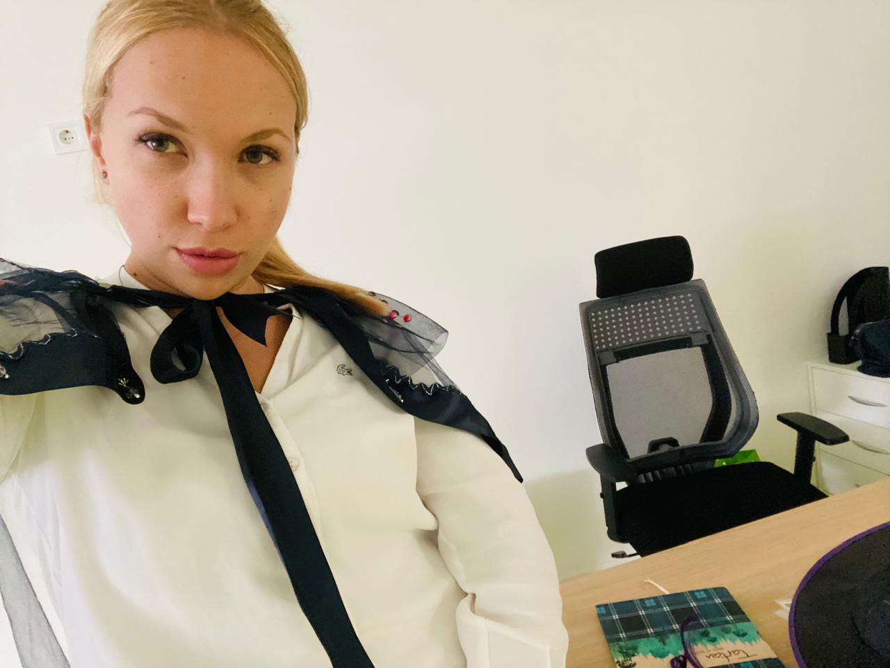
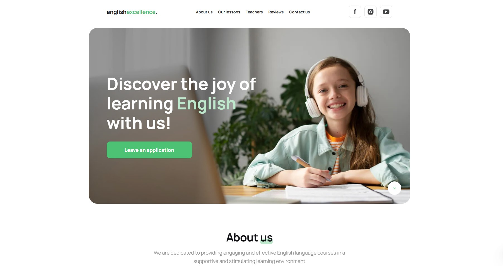
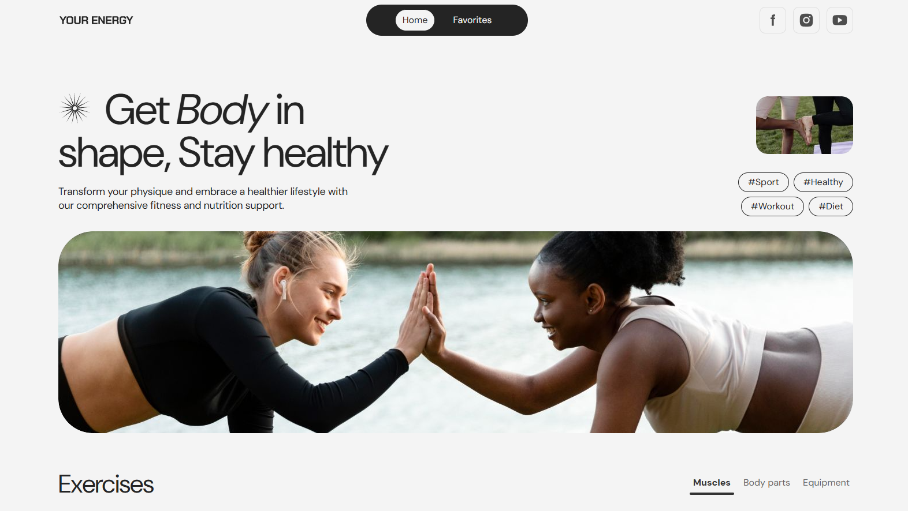
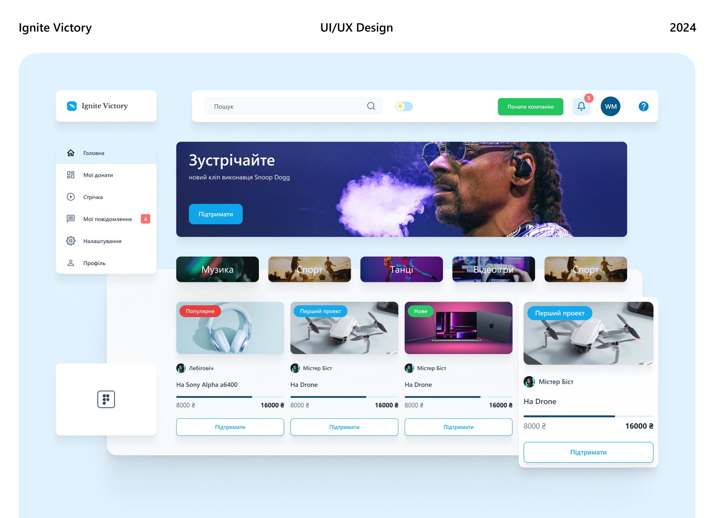
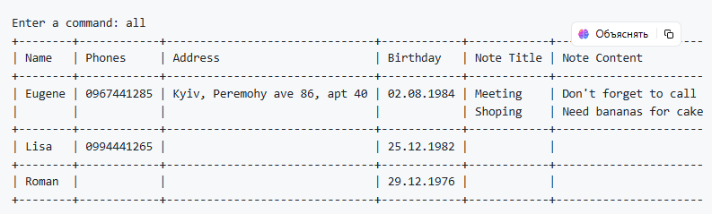
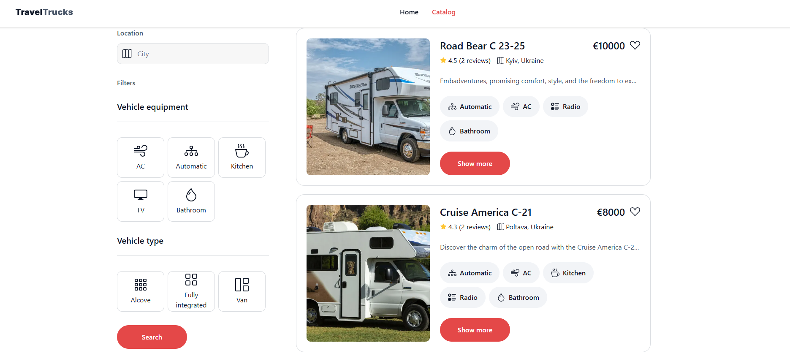

About me

I am a software engineer with a solid background in full-stack
development and a passion for creating scalable, user-friendly
applications. My technical expertise is complemented by significant
experience in corporate leadership and business development,
enabling me to align technology solutions with strategic goals. As a
co-founder of New School of Science in Kyiv,
I managed a team of over 100, overseeing curriculum design, ICT development, strategic
planning, and operational departments like compliance and
accounting. I later led the Encyclopedia of Science School project
in Riyadh, collaborating with government entities, conducting market
research, and establishing robust operational frameworks. Both
initiatives resulted in lasting, scalable organizations. My unique
blend of technical and corporate expertise equips me to deliver
impactful ICT projects that bridge business needs and technological
innovation. As an IT Project Manager, I bring a proven track record
of leadership, strategic execution, and delivering results at the
intersection of technology and business. By the way, check out my
awesome work .
My recent projects
English Excellence

English Excellence [React, Node.js, Vite, AOS, JS, HTML5, CSS]
Developed a responsive platform for connecting students with tutors,
handling both front-end and back-end tasks. Implemented dynamic
interfaces using React, and built RESTful APIs with Node.js.
Optimized development workflow with Vite and enhanced user
experience with AOS animations.
Bombshelter Locator "SafeHouse"

Bombshelter Locator "SafeHouse" [Figma,Material Design,DALL-E,
Midjourney,Hotjar] Designed the SafeHouse application in Figma,
focusing on user-centric UI/UX design to create an intuitive and
visually appealing bombshelter locator. Developed wireframes,
mockups, and interactive prototypes to effectively communicate the
design vision and user flow. Emphasized responsive design to ensure
a seamless experience across various devices and screen sizes.
Your Energy App

Your Energy Web App [JavaScript, React, REST API, CSS, HTML5, LocalStorage]
Developed a responsive fitness platform for users to search and explore exercises, handling both front-end and back-end integrations.
Created dynamic and filterable exercise listings using React, and implemented server-side pagination via RESTful API.
Enhanced user interaction with features like ratings, exercise detail modals, and subscription forms.
Maintained user preferences using LocalStorage.
Crowdfunding platform (CRM system)

Crowdfunding platform (CRM system) [Figma, Material Design,
Hotjar, InVision, UserTesting ] Designed a CRM platform for
crowdfunding campaigns, focusing on donor management, campaign
tracking, and analytics. Utilized Figma, Material Design, DALL-E,
and Midjourney for design and visual assets, and conducted user
research with Hotjar, Zeplin, Stark, and UserTesting. As Scrum
Master, managed the project, coordinating design and development
teams to ensure timely delivery.
"Ignite Victory" is a crowdfunding platform designed to connect
innovative project creators with backers who share a passion for
supporting new ideas. The platform aims to foster creativity and
entrepreneurship by providing a space where creators can showcase
their projects and receive funding from a global community of
backers.
Personal assistant

Personal assistant [Python, PrettyTable, Prompt Toolkit,
Pickle, Regex] Developed a Python command-line tool for managing
contacts and notes using PrettyTable and Prompt Toolkit. As Scrum
Master, facilitated Agile processes, managed timelines, and
coordinated design and development. Implemented features for contact
management, including validation checks and search functionality.
Enabled data persistence through file saving and loading.
Travel Tracks

This project is based on React.js and uses Vite as build tool. It
provides a fast and modern environment for developing web
applications.